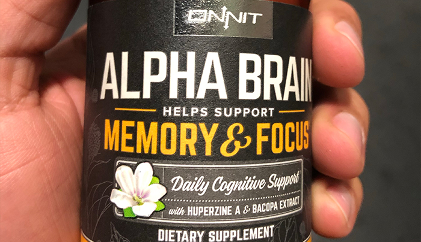
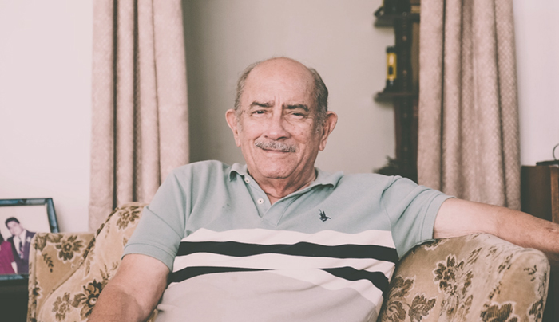
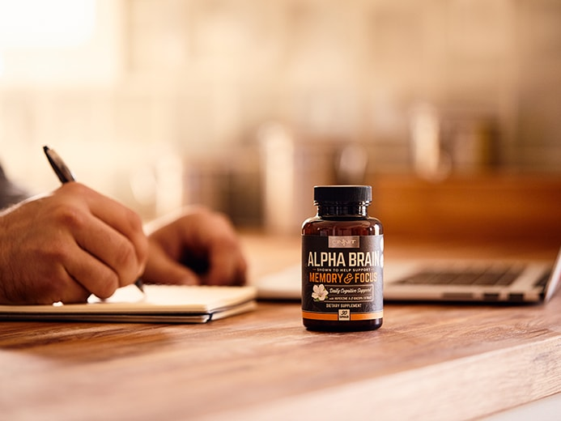
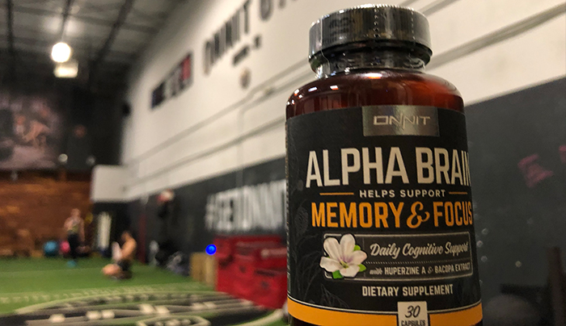
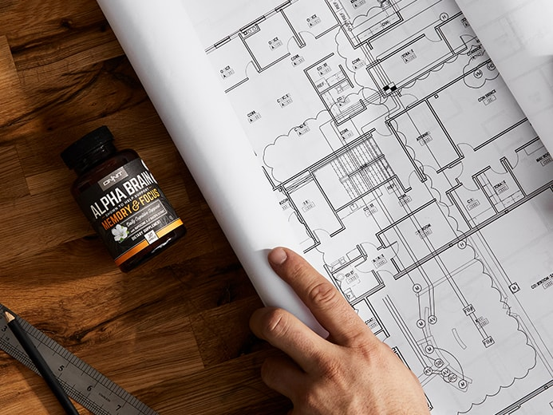
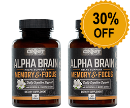

EVERYONE is using Alpha BRAIN to support their brain power... Even Celebrities!
- 600k+ Followers
- 600k+ Likes
- 160k+ Followers

Staying productive has never been so hard. Notifications from WhatsApp, Instagram, Snapchat, and more are making people more distracted than ever.
Many people feel like they’re doing a hundred things at once, but leave the office feeling like they got nothing done. Well, it’s got a lot to do with shrinking concentration spans. In fact, a Microsoft study found people’s attention spans have plummeted 33% in just two decades. (1)
Being distracted and unfocused is not something to shrug off. It can jeopardize people’s ability to hit their work targets and put them at risk of blowing their chances of a promotion. Even worse, it can mean losing out to coworkers who can stay focused and get stuff done.
While some people waste hours scrolling endlessly through Instagram, these 22 customers are finding ways to hack their brains to achieve optimal productivity, almost at will, starting with a nootropic called Alpha BRAIN.
1. Joe Rogan, UFC Commentator and Podcaster, feels like it helps him form sentences better.
"It seems to fire up your brain at a higher RPM level... I feel like it helps me
form sentences better."
- Joe Rogan, UFC Commentator and Podcaster
Rogan hosts The Joe Rogan Experience, one of the web’s most popular podcasts, in which he discusses everything from martial arts and fitness to politics and pop culture. With a guest list that includes UFC fighters, stand-up comedians, A-list actors, conspiracy theorists, and game-changing entrepreneurs, the show gets more than 300 million downloads and streams per month, making Rogan one of the biggest independent media personalities in the world.
2. This customer took a chance on Joe Rogan's wise words.
"I normally don't fall for podcast advertising or "Celeb" reviews but Rogan got
me! Lol I have to say I was super impressed after just a few days on this stuff. I'm definitely more
focused for sure..razor sharp focus
especially when I take it w my coffee. Memory is slightly more on point. It seriously improves my
mood too. drastically. I'm on my second bottle now. I highly recommend! Thanks Rogan and
Crew!"
- Allen, Verified
Customer
3. A life-saver for the jet-setter.
"In addition to doing everything it’s advertised to do, this is also a life-saver
if you travel a lot. Just had to travel to Paris for work and had a 4 hour meeting, 1.5 hours after
I landed from a red-eye. Popped
two of these bad-boys in the taxi on my way to the meeting, and was golden the whole time. I even
made it through dinner after, with energy and focus to spare."
- Anna, Verified Customer
4. It also helps make daily commutes more tolerable.
"Really helps with focus throughout the entire day, feel energized all day even
on the commute home from a hard days work"
- Randy, Verified Customer
5. Less Scatterbrained.
"I bought it for my husband and I seem to notice a small difference. He is more
focused and because he is less of a scatter brain his mood has improved. Thank you for a product
that works with his chemistry."
-
Jennj, Verified Customer
6. Some even use Alpha BRAIN to help with their "Baby Brain."
"During pregnancy I began experiencing 'baby brain' that got worse over the 9
months and lingered until I started using Alpha BRAIN about a year after my daughter was born. I
attribute my return to normalcy
to this product as nothing else was working! I am so thankful to Onnit for this product and
recommend it to everyone! Great company, great products and impeccable customer service!"
-
April,
Verified Customer
7. Celebrated by UFC heavyweights and Comedians.
"I refuse to do anything without Alpha BRAIN. Some say I have an issue. I
disagree."
- The Fighter and the Kid, Podcasters
Hosted by former UFC heavyweight Brendan Schaub and comedian Bryan Callen, The Fighter and the Kid is one of the Web’s most popular podcasts, averaging nine million downloads per month.
8. Even poker dealers love it!
"I'm a poker dealer, and I've noticed a significant difference in my ability to
focus since I've started using Alpha Brain...
Something also worth noting is that for those
of you truly
looking to maximize your focus/attention, nothing beats 40 minutes of aerobic exercise daily. Get
yourself out of breath, run.
If you're like me, as most of you visiting Onnit
probably are, you're going to want to get in your exercise + Alpha Brain and see massive
changes.
It's worth it."
- FuSuYa, Verified Customer

For a limited time, you can save up to 30% when you purchase a multipack
of
Alpha BRAIN.
9. It helps Pro Hockey Player, Duncan Keith, get "razor sharp clarity."
"Hockey is not only physically but also mentally demanding. Alpha BRAIN helps me
to focus and have razor sharp clarity and alertness on the ice."
- Duncan Keith, Pro Hockey
Player
Canadian professional ice hockey defenceman, Alternate Captain for the NHL Chicago Blackhawks and two time Olympic gold medalist, Duncan Keith, is known as a two-way defenceman, highly skilled in both shutdown and offensive roles.
10. Haven't found the perfect workflow yet? This could be the answer.
"Excellent! I do a lot of very repetitive computer work and over time its very
difficult to maintain the same amount of energy, focus, and attention to detail the work requires.
I notice the days when I do not take Alpha Brain, I feel slower. My evaluations take longer, I
struggle more to get things done... It has made a SIGNIFICANT difference and
improvement in my work flow especially working from home and having the temptation to "take a
break". Worth every penny and will definitely buy again!"
- Anonymous,
Verified Customer
11. This customer even got promoted at work!
"After trying for three months, my family friends and colleagues have all seen a
massive difference in my daily performance in my cognitive function. My boss promoted me as
well and I say it’s because of alpha brain! Try it for yourself!"
- Anonymous, Verified
Customer
12. This customer claims it's not a placebo effect.
"I try to be aware of the placebo effect, because I want things to work. But I
cant deny I feel sharper on days when I take it. More aware, I dont know, there's probably
a few ways to describe it."
- Patrick, Verified Customer
13. Michelle Waterson, aka the "Karate Hottie," uses it to focus while training.
"I use so many of the Onnit supplements and foods and am thankful I had them to
support me in my training leading up to my championship fight. I enjoy the focus Alpha
BRAIN brings to my training, I feel like I am more able to get in the zone when I take
it.†"
- Michelle Waterson, UFC Strawweight Fighter
Waterson is a former Invicta FC atomweight champion and is currently competing in the UFC’s strawweight division.
14. Professional writer, John Romaniello, says goodbye to the jitters from caffeine.
"As a professional writer, I can tell you that Alpha BRAIN has been of
inestimable value. It has been fantastic for focus without the jittery feeling caffeine
gives. It's a nice clean focus without any noticeable detractions.†"
- John Romaniello,
Fitness Expert, Trainer, and Writer
As a 12-year veteran in the fitness industry, Roman has written dozens of articles for hundreds of magazines and websites, ranging from Men’s Health to Fast Company, and serves as an advisor to several fitness and tech companies.
15. Can confirm: No more writer's block!
"While I haven't specifically tested my performance while using and abstaining
from its use, I find Alpha Brain helps me focus on my writing. I take
two pills at the beginning of every session, and find the flow comes to me with ease."
- A
Diles, Verified Customer
For a limited time, you can save up to 30% when you purchase a multipack
of
Alpha BRAIN.
16. This customer felt a difference within one week.
"This product really started working after week one! My brain activity was much
easier to control and my memory has been improving. The only thing
I’m on the fence about are my dreams, I’m not used to dreaming or at least remembering what I dreamt
and now I have very lucid dreams! Overall
I think the pros outweigh the cons!"
- Anonymous, Verified Customer
17. Alpha BRAIN helped this golfer eliminate second-guessing during critical moments.
"I love alpha brain as it helps quiet my thoughts and increase my focus
especially when on the golf course. It seems to bring confidence to
my game and eliminates second-guessing on shot situations. Don't play golf without it."
-
Mark Wilson, Verified Customer
18. This customer claims that Alpha BRAIN "lives up to the hype"
"I bought this 3 weeks ago. Almost done my first bottle. I can honestly say I
feel way better. I have a clarity and energy I have never
had. This is amazing!! I’m in shock how well I feel and how clear my mind is. I have been looking
for a product like this for a while.
I’ve tried multiple vitamins and countless products. All not bad or good or just not living to their
hype. ONNit lives up to the hype.
I must say Joe Rogan plug had a lot to do with my buy. But well worth it because I feel great. Thank
you."
- DVracing, Verified
Customer
19. "Missing any little detail could result in a catastrophe" — NFL Player Andrew Sendejo
"The NFL is more than just about the physical aspect, the mental part of the game
is HUGE. Missing an assignment or any little detail
could result in a catastrophe on the field. I take Alpha Brain in the morning before meetings to
keep me mentally locked in while
we are game planning for that week's opponent."
- Andrew Sendejo, Pro Football Player
Andrew Sendejo is an American football strong safety for the Minnesota Vikings of the National Football League. He made his NFL debut as a rookie with Dallas in 2010, moving to the New York Jets in 2011, and a has been with the Minnesota Vikings since 2011.
20. The best in the market.
"Best offering on the market. There are so many brands to choose from. Honestly
without extensive knowledge and research it's
hard to know what a consumer it's really getting. For many things especially substances you into
your body, your fuel,
it's worth paying a slight premium. Having wasted money many lesser products, you actually save
buying right the first
time."
- Md22canadamerican, Verified Customer
21. Remember: Alpha BRAIN is a supplement, not magic.
"I have been using Alpha Brain daily since 2015 and find huge value in it. That
being said, it's a subtle benefit. You
aren't going to order a bottle, take some, and all of a sudden come up with an earth shattering idea
simply due to
this supplement. However, where it really shines is giving you a subtle mental performance increase
over your baseline.
If I had to make a guesstimate at a quantification of the benefits, I would say in the neighborhood
of 3% - 10% performance
increase for me (this is just to give some color of my anecdotal experience - it's probably
inaccurate and definitely
isn't scientific). The main thing I notice is that I can come up with thoughts quicker in real time
such as during
a business meeting. Have you ever said to your self, "Oh that would have been the perfect comeback
or idea" like 2
hours after the fact? Alpha Brain will help you come up with that idea in closer to real time. Not
to say that is the
only benefit just trying to give a concrete example of the types of benefits you will realize.
However, realize that
if you don't already have decent prerequisites such as good hydration, fitness, and diet then Alpha
Brain won't do
anything for you. It's a supplement, not a magic bullet. On occasion for fun, try taking it before
bed instead of in
the morning for some crazy dreams!"
- Anonymous, Verified Customer
For a limited time, you can save up to 30% when you purchase a multipack of Alpha BRAIN.
 Check AvailabilitySecure Transaction